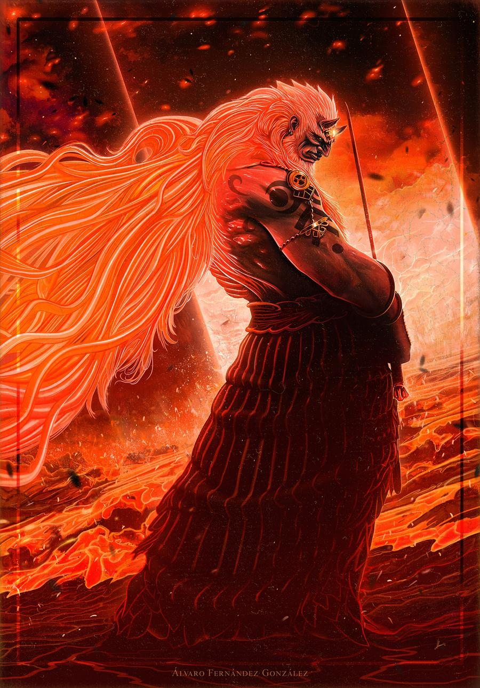

Endgame & Master Sword

🗡️ Master Sword
- Trail of the Master Sword: Vào Korok Forest qua Depths, đánh Phantom Ganon, nói Great Deku Tree.
- Recovering the Hero's Sword: Theo marker Light Dragon, phóng từ Skyview Tower, kéo Master Sword từ đầu rồng.
- Master Sword có durability vô hạn (cooldown). Dùng cho Ganondorf/final.
- Mẹo: Cần đủ stamina/heart để kéo; làm quest sau khi có đủ.
🐉 Dragon's Tears (Memory)
Tìm geoglyphs trên map (Impa quest). Mỗi Dragon's Tear cho memory (cắt cảnh). Có 12 Dragon's Tears (11 geoglyphs + 1 final tại Rist Peninsula). Memory giải thích cốt truyện Zelda.
| # | Geoglyph/Memory | Vùng | Tọa độ (X, Y, Z) | Ghi chú |
|---|---|---|---|---|
| 1 | Rauru (Where Am I?) | Tabantha Frontier | -1412, 0965, 0123 | Gần New Serenne Stable; Impa quest bắt đầu. |
| 2 | Castle (An Unfamiliar World) | Hebra | -2550, 1887, 0319 | Gần Lindor's Brow Skyview Tower. |
| 3 | Purah Pad (Mineru's Council) | Eldin | 1829, 0737, 0089 | Gần Eldin Canyon Skyview Tower. |
| 4 | Molduga (The Gerudo Assault) | Gerudo Desert | 0694, -1309, 0053 | Gần Popla Foothills/Sahasra Slope Tower. |
| 5 | Kneeling Man (A Show of Fealty) | Gerudo Highlands | -3179, -1699, 1048 | Trên núi, dùng Gerudo Highlands Tower. |
| 6 | Long-Haired Lady (Zelda and Sonia) | Gerudo Highlands/Tabantha | -3096, -0077, 0211 | Gần Turakawak Shrine. |
| 7 | Dagger (Sonia Is Caught by Treachery) | Necluda | 3325, -3567, 0004 | Gần Lurelin Village/Rabella Wetlands. |
| 8 | Demon King (Birth of the Demon King) | Hebra Mountains | -1863, 3621, 0236 | Gần Pikida Stonegrove Tower. |
| 9 | Tear Stone (The Sage's Vow) | Lanayru | 4468, -0304, 0074 | Gần Mount Lanayru Tower. |
| 10 | Shrine (The King's Duty) | Faron/Necluda | -0649, -2682, 0068 | Gần In-isa Shrine. |
| 11 | Master Sword (A Master Sword in Time) | Akkala/Thyphlo Ruins | 0892, 2951, 0362 | Sky island chữ thập, Thyphlo Ruins Tower. |
| 12 | Final (Tears of the Dragon) | Rist Peninsula | 4534, 2143, 0000 | Final tear; gần Gemimik Shrine. |
Mẹo: Dùng Shrine Sensor hoặc Impa's balloon để tìm geoglyphs. Mỗi tear cho 1 memory (cắt cảnh).
👹 Destroy Ganondorf (Final Boss)

Pha 1: Xuống Depths
- Xuống dưới Hyrule Castle (chasm).
- Đánh quân đội Phantom Ganon.
- Dùng Sage Vows.
Pha 2: Ganondorf
- Né đòn, parry, dùng Sage Vows.
- Dùng Master Sword.
Pha 3: Demon Dragon
- Bay bằng paraglider.
- Fuse light vào tên.
- Bắn mắt/sừng.
- Skydive xuống bắt Zelda.

💯 100% Completion
- 152 Shrines.
- 120 Lightroots.
- 147 caves.
- 1000 Korok seeds.
- Hestu's Gift sau khi trả đủ Korok.
- Ancient Hero's Aspect (armor) từ hoàn thành shrine.
- Great Fairy upgrades (Cotera...).